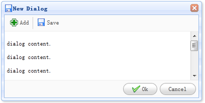

Extend from $.fn.window.defaults. Override defaults with $.fn.dialog.defaults.
The dialog is a special type of window, which can has a toolbar on top and a button bar on bottom. The dialog has only one close tool display on top right of header by default. Users can configure dialog behaviors to display other tools such as collapsible, minimizable, maximizable tool, etc.
Create dialog via markup from an existing DOM node. The example below shows a modal dialog with resizable feature.
- <div id="dd" class="easyui-dialog" title="My Dialog" style="width:400px;height:200px;"
- data-options="iconCls:'icon-save',resizable:true,modal:true">
- Dialog Content.
- </div>
Creating dialog using javascript is also allowed. Now let's create a modal dialog and then call 'refresh' method to load its content via ajax.
- <div id="dd">Dialog Content.</div>
- $('#dd').dialog({
- title: 'My Dialog',
- width: 400,
- height: 200,
- closed: false,
- cache: false,
- href: 'get_content.php',
- modal: true
- });
- $('#dd').dialog('refresh', 'new_content.php');
The properties extend from window, below is the overridden properties for dialog.
| Name | Type | Description | Default |
|---|---|---|---|
| title | string | The dialog title text. | New Dialog |
| collapsible | boolean | Defines if to show collapsible button. | false |
| minimizable | boolean | Defines if to show minimizable button. | false |
| maximizable | boolean | Defines if to show maximizable button. | false |
| resizable | boolean | Defined if the dialog can be resized. | false |
| toolbar | array,selector |
The top toolbar of dialog, possible values: 1) an array, each tool options are same as linkbutton. 2) a selector that indicating the toolbar. The dialog toolbar can be declared within a <div> tag: <div class="easyui-dialog" style="width:600px;height:300px" data-options="title:'My Dialog',toolbar:'#tb',modal:true"> Dialog Content. </div> <div id="tb"> <a href="#" class="easyui-linkbutton" data-options="iconCls:'icon-edit',plain:true"/a> <a href="#" class="easyui-linkbutton" data-options="iconCls:'icon-help',plain:true"/a> </div> The dialog toolbar can also be defined via array: <div class="easyui-dialog" style="width:600px;height:300px"
data-options="title:'My Dialog',modal:true,
toolbar:[{
text:'Edit',
iconCls:'icon-edit',
handler:function(){alert('edit')}
},{
text:'Help',
iconCls:'icon-help',
handler:function(){alert('help')}
}]">
Dialog Content.
</div>
|
null |
| buttons | array,selector |
The bottom buttons of dialog, possible values: 1) an array, each button options is same as linkbutton. 2) a selector that indicating the button bar. The buttons can be declared within a <div> tag: <div class="easyui-dialog" style="width:600px;height:300px" data-options="title:'My Dialog',buttons:'#bb',modal:true"> Dialog Content. </div> <div id="bb"> <a href="#" class="easyui-linkbutton">Save</a> <a href="#" class="easyui-linkbutton">Close</a> </div> The buttons can also be defined via array: <div class="easyui-dialog" style="width:600px;height:300px"
data-options="title:'My Dialog',modal:true,
buttons:[{
text:'Save',
handler:function(){...}
},{
text:'Close',
handler:function(){...}
}]">
Dialog Content.
</div>
|
null |
The events extend from window.
The methods extend from window, below is the added methods for dialog.
| Name | Parameter | Description |
|---|---|---|
| dialog | none | Return the outer dialog object. |